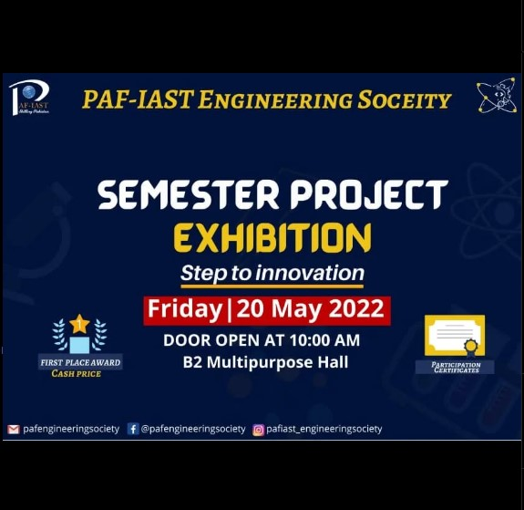
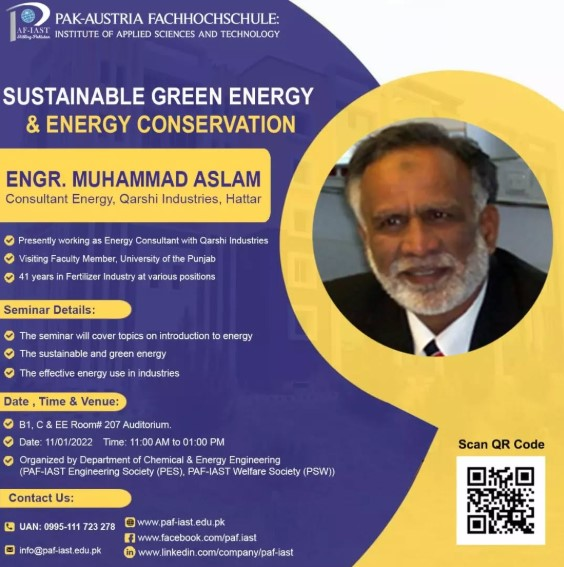
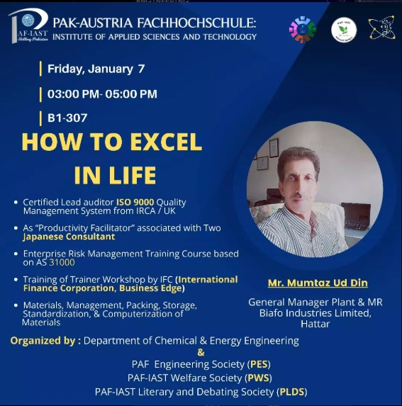
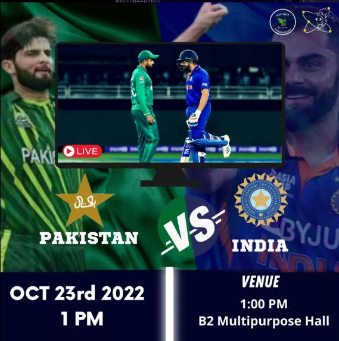

Society Objectives
- Our mission is to provide opportunities for our members to explore the wider world of engineering, as well as connecting them with students of other universities.
- Guiding Society Members of relevant industry developments and career opportunities. Develop the spirit, and attitude of healthy competition for individual and social causes, within each student.
- Develop students’ interest, and participation in the practical application of the knowledge related to different fields of engineering.
Society Details
Join us to enhance your artistic skills, participate in fun activities, and showcase your skills!
Cabinet Members
- Dr. Rizwan Ahmad - Faculty Advisor
- Mr. Saif Ullah - President
Benefits of Membership:
- Provision of a link between society members and industry.
- Participation in informative seminars related to engineering and its importance.
- Workshops to give a practical flavor of engineering to society members.
- Arranging some community service events for the welfare of institute and surroundings.
How to Join:
Click the button below to fill the form and be a part of our team.
Join NowMedia Gallery




Contact Us
Follow us on social media or reach out to us through outlook